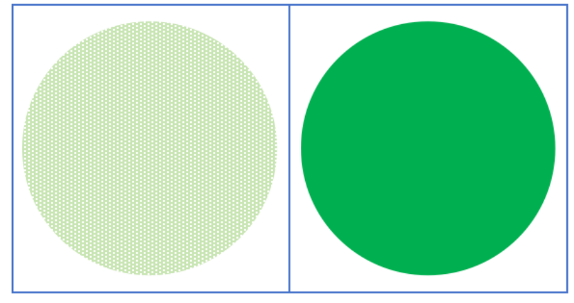
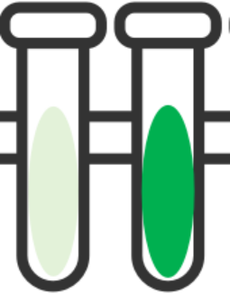
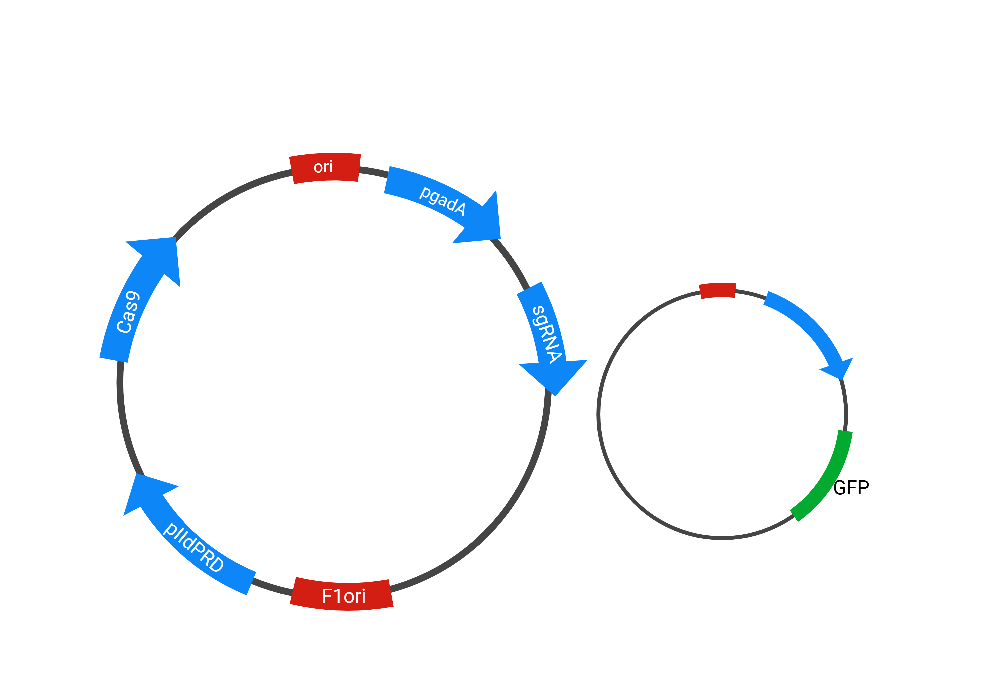

实验设计&预期结果
测试Cas9-VP64对质粒表达的促进作用，将PETase换成GFP，测试单独Cas9（左）与Cas-VP64（右）之间表达量的区别，Cas9-VP64促进表达。
左图是观察乳植杆菌内的绿色荧光蛋白表达情况；
右图是观察乳植杆菌分泌到细胞外的绿色荧光蛋白浓度。
质粒构建
左图为构建的GFP质粒，用于做上述实验。
我们还需检测微塑料降解后生成的对苯二甲酸（TPA）和乙二醇（EG），能否通过乳酸菌自身的代谢系统代谢，若不能则需继续联合其他益生菌进行模拟肠道菌群，观察最终产物代谢情况。